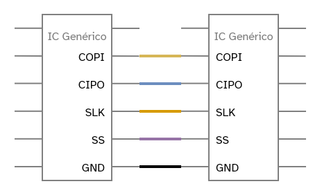
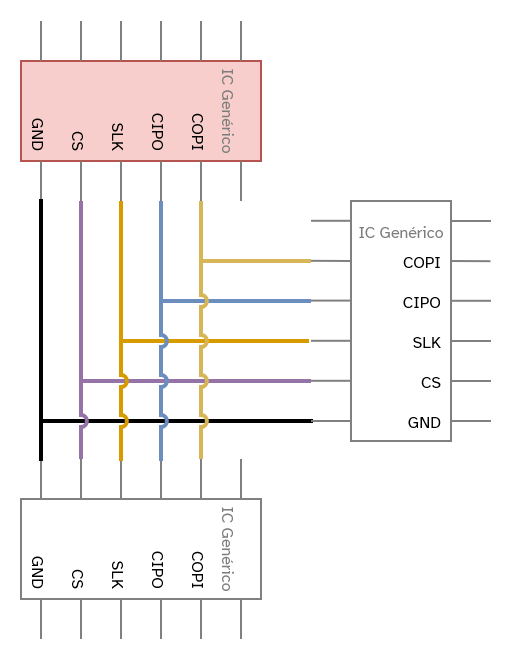

SPI
SPI Serial Peripheral Interface
Para além do I2C, temos também o SPI, um protocolo de comunicação serial síncrono que se destaca pela sua alta velocidade e pela comunicação full-duplex, o que significa que os dados podem ser enviados e recebidos simultaneamente. Ele é amplamente utilizado em aplicações que exigem maior taxa de transferência de dados, como cartões SD, displays e alguns tipos de sensores. A principal desvantagem em relação ao I2C é a necessidade de um número maior de fios.
Historicamente, a documentação do SPI utilizava os termos Master (Mestre) e Slave (Escravo). No entanto, a comunidade de tecnologia tem se movido para substituir essa terminologia por alternativas mais inclusivas e descritivas. Por isso, adotaremos os termos Controlador e Periférico, respectivamente. O termo “Controlador” descreve com mais precisão o papel do dispositivo que gerencia o barramento e inicia a comunicação, enquanto “Periférico” define adequadamente os dispositivos que respondem às solicitações.
Conexão Física
A comunicação SPI exige, no mínimo, quatro linhas para conectar um controlador a
um periférico. Lembre-se também de conectar o GND entre os dispositivos.
-
SCLK(Serial Clock): Linha que transporta o sinal de clock gerado pelo Controlador para sincronizar a transmissão de dados. -
COPI/MOSI(Controler Out Peripheral In): Linha de saída de dados do Controlador para a entrada do Periférico. -
CIPO/MISO(Controler In Peripheral Out): Linha de entrada de dados no Controlador, vindo da saída do Periférico. -
CS/PS/SS(Chip/Peripheral Select): Pino no controlador que seleciona com qual periférico ele deseja se comunicar. Cada periférico no barramento precisa de uma linhaSSdedicada. Quando o nível lógico dessa linha vai para baixo (LOW), o periférico é ativado.

De forma similar ao I2C, o protocolo SPI também suporta a comunicação com múltiplos periféricos em um único barramento. A principal diferença, no entanto, está no método de seleção: em vez de um endereço via software, o SPI utiliza uma linha de hardware dedicada, o Chip Select (CS), para cada periférico que se deseja controlar.

Programando
No ambiente do Arduino, a comunicação SPI é gerenciada pela biblioteca padrão
SPI.h. Ela fornece as funções necessárias para configurar o microcontrolador
como controlador ou periférico.
Exemplo de Comunicação
No cenário a seguir, o controlador envia o caractere 'H' para o periférico. O
periférico, ao receber o dado, envia de volta o caractere 'W' na mesma
transação.
Código do Controlador
/*
* Descrição:
* Este código configura a placa como controlador SPI enviando um caractere
* para o periférico e recebendo a resposta. Um LED integrado indica o momento
* da transmissão para feedback visual, enquanto as mensagens são exibidas no monitor serial.
*/
#include <SPI.h>
// Define o pino que será usado para o Chip Select (CS).
// O pino 10 é o padrão para SS (Slave Select) na maioria das placas Arduino,
// mas você pode usar qualquer outro pino digital para controlar múltiplos periféricos.
const int pinoCS = 10;
// Configura os parâmetros da comunicação SPI:
// - Velocidade de 8MHz
// - Ordem de bits MSB (Most Significant Bit First)
// - Modo SPI 0
SPISettings mySPISettings(8000000, MSBFIRST, SPI_MODE0);
void setup() {
// Inicializa a comunicação serial para exibir mensagens de debug.
Serial.begin(9600);
// Configura o pino de Chip Select como saída.
pinMode(pinoCS, OUTPUT);
// Garante que o Periférico comece desativado, mantendo a linha CS em nível ALTO.
digitalWrite(pinoCS, HIGH);
// Configura o LED integrado como saída para dar feedback visual.
pinMode(LED_BUILTIN, OUTPUT);
// Inicializa o hardware SPI da placa.
SPI.begin();
}
void loop() {
Serial.println("Controlador: Ativando periférico...");
// --- Início da Transação SPI ---
// Acende o LED para indicar que a comunicação está prestes a começar.
digitalWrite(LED_BUILTIN, HIGH);
// Aplica as configurações SPI definidas anteriormente.
SPI.beginTransaction(mySPISettings);
// Ativa o periférico, colocando a linha CS em nível BAIXO.
digitalWrite(pinoCS, LOW);
// Envia o caractere 'H' e, ao mesmo tempo, lê o byte retornado pelo periférico.
char receivedChar = SPI.transfer('H');
// Desativa o periférico, retornando a linha CS para o nível ALTO.
digitalWrite(pinoCS, HIGH);
// Libera o barramento SPI para outros dispositivos.
SPI.endTransaction();
// Apaga o LED para indicar que a transação terminou.
digitalWrite(LED_BUILTIN, LOW);
// --- Fim da Transação SPI ---
// Exibe o caractere recebido no monitor serial.
Serial.print("Controlador: Recebido de volta -> ");
Serial.println(receivedChar);
// Aguarda 1 segundo antes de iniciar a próxima comunicação.
delay(1000);
}
Código do Periférico
Como o SPI depende de uma resposta imediata e síncrona ao clock do controlador, a programação do periférico geralmente depende de interrupções de hardware. A forma de configurar isso pode variar entre diferentes arquiteturas de microcontroladores, como AVR (Arduino Uno) e ESP32.
Periférico em Arduino (AVR)
/*
* Descrição:
* Código para configurar o Arduino como periférico SPI. Ele usa uma rotina de
* interrupção (ISR) para responder instantaneamente quando recebe um dado.
**/
#include <SPI.h>
#include <stdint.h>
volatile char receivedChar;
volatile bool newDataAvailable = false;
// ISR (Interrupt Service Routine) - Executada quando a transferência SPI é completada
ISR (SPI_STC_vect) {
receivedChar = SPDR; // Lê o byte que acabou de ser recebido
newDataAvailable = true; // Marca flag indicando que um novo dado chegou
SPDR = 'W'; // Prepara o próximo byte para ser enviado de volta
}
void setup() {
Serial.begin(9600);
pinMode(MISO, OUTPUT);
// Importante: SS deve ser entrada para ser controlado pelo controlador
pinMode(SS, INPUT);
SPCR |= _BV(SPE); // Habilita o hardware SPI
SPCR |= _BV(SPIE); // Habilita a interrupção SPI
Serial.println("Arduino SPI Periférico inicializado");
}
void loop() {
if (newDataAvailable) {
Serial.print("Periférico recebeu: ");
Serial.print(receivedChar);
Serial.println(", enviou de volta: W");
newDataAvailable = false; // Reseta a flag
}
}
Periférico em ESP32
No ESP32, bibliotecas específicas podem abstrair a complexidade do hardware, tornando a configuração mais simples.
/*
* Descrição:
* Código para configurar a ESP32 como periférico SPI. A biblioteca
* abstrai a configuração da interrupção através de uma função de callback.
**/
#include <esp32SPI.h>
esp32SPI spi;
volatile char receivedChar = 0;
volatile bool newDataAvailable = false;
// Função de callback que será chamada quando dados forem recebidos via SPI
void onSPIReceive() {
receivedChar = spi.read();
spi.write('W'); // Prepara a resposta para o controlador
newDataAvailable = true;
}
void setup() {
Serial.begin(9600);
spi.onReceive(onSPIReceive); // Registra a função de callback
spi.begin();
Serial.println("ESP32 SPI Periférico inicializado");
}
void loop() {
if (newDataAvailable) {
Serial.print("Periférico recebeu: ");
Serial.print(receivedChar);
Serial.println(", enviou de volta: W");
newDataAvailable = false;
}
delay(10);
}